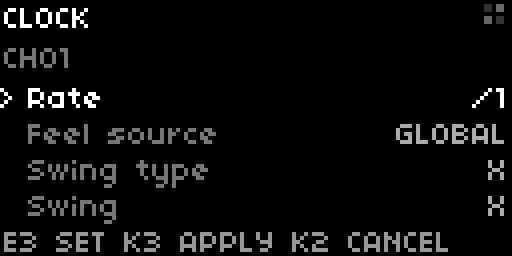
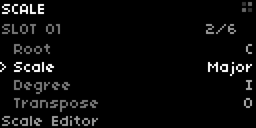
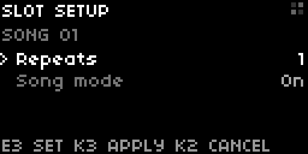
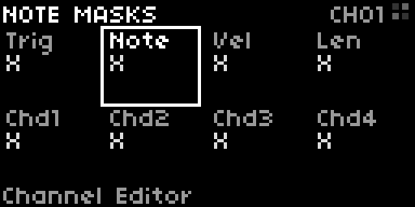

Actual native screenshots from the passing real-time UI tests. E2 selects a row; E3 edits its value. Long lists follow your selection. These captures show the current list layout. Selected text that overflows is being corrected to scroll so its full wording remains readable.



